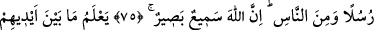
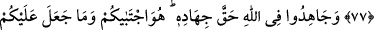
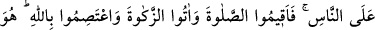
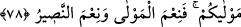

ALLAH’IN KADRİNİ
HAKKIYLA BİLEMEDİLER
73. Ey insanlar! (Size) bir misal verildi; şimdi onu dinleyin: Allah’ı bırakıp da
yalvardıklarınız (taptıklarınız) bunun için bir araya gelseler bile bir sineği dahi
yaratamazlar. Sinek onlardan bir şey kapsa, bunu ondan geri de alamazlar. İsteyen
de âciz, kendinden istenen de!
74. Onlar, (Bu âciz putları Allah’a ortak koşmak suretiyle) Allah’ın kadrini
hakkıyla bilemediler. Hiç şüphesiz Allah, çok kuvvetlidir, çok üstündür.
75. Allah meleklerden de elçiler seçer, insanlardan da. Şüphesiz Allah işitendir,
görendir.
76. Onların önlerindekini de, arkalarındakini de (yaptıklarını da, yapacaklarını
da) bilir. Bütün işler Allah’a döndürülür.
77. Ey îmân edenler! Rükû edin; secdeye kapanın; Rabbinize ibadet edin; hayır
işleyin ki kurtuluşa eresiniz.
78. Allah uğrunda, hakkını vererek cihad edin. O, sizi seçti; din hususunda
üzerinize hiçbir zorluk yüklemedi; babanız İbrahim’in dininde (de böyleydi).
Peygamberin size şâhid olması, sizin de insanlara şâhid olmanız için, O, gerek daha
önce (gelmiş kitaplarda), gerekse bunda (Kur’an’da) size “müslümanlar” adını